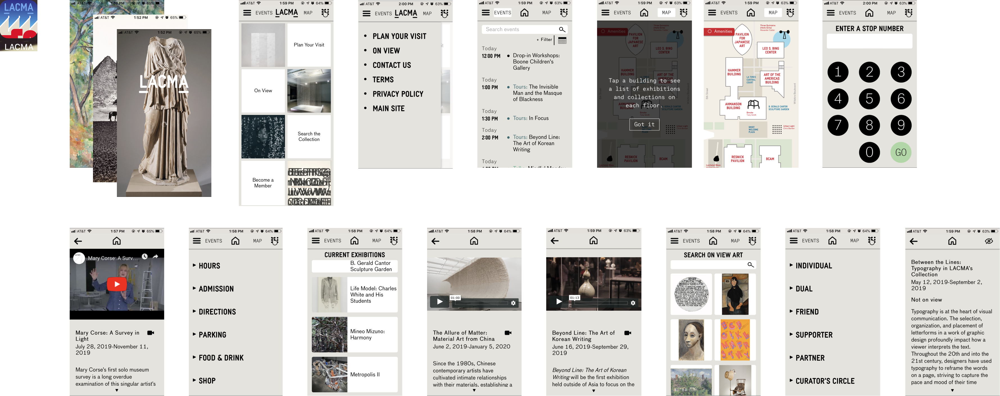

MoMA Design Store Rewards
Revolutionizing the visitor experience, the updated Los Angeles County Museum of Art's mobile app enhances engagement and vastly enriches the informational resource for both casual visitors and dedicated researchers.
Category
Service Design · UIUX
Service Design · UIUX
Timeline
06.2021-09.2021
06.2021-09.2021
Role
Project Proposal
Project Proposal
One big question –
Are mobile apps worth building for art institutions?
Are mobile apps worth building for art institutions?
The LACMA team attempted to create a mobile app, but it wasn't very successful.
Before I began the redesign, I carried out some research to better understand the field, ensuring that our efforts would be meaningful and effective.
Before I began the redesign, I carried out some research to better understand the field, ensuring that our efforts would be meaningful and effective.
· Research & Insights ·
Research
Seasonal pop-up stores add an element of surprise and exclusivity, popping up in various locations to offer limited-time shopping experiences that keep customers engaged and excited. In addition to these shopping avenues, the MoMA Design Store enhances its connection with art lovers through museum memberships, offering exclusive benefits and fostering a deeper relationship with the MoMA community. Seasonal sales events further entice customers, providing opportunities to acquire unique design pieces at attractive prices.
Domain Research
We aim for our enrolled customers to actively engage with our comprehensive range of services and consistently reap the rewards with each purchase, thereby contributing to a high customer return rate.
We aim for our enrolled customers to actively engage with our comprehensive range of services and consistently reap the rewards with each purchase, thereby contributing to a high customer return rate.
Literature Review
We want to introduce our program to a wide range of customers, sparking their interest and encouraging them to join. We aim to present this as an exclusive and enticing opportunity, and unique and rewarding experience.
We want to introduce our program to a wide range of customers, sparking their interest and encouraging them to join. We aim to present this as an exclusive and enticing opportunity, and unique and rewarding experience.
Survey
We aim for our enrolled customers to actively engage with our comprehensive range of services and consistently reap the rewards with each purchase, thereby contributing to a high customer return rate.
We aim for our enrolled customers to actively engage with our comprehensive range of services and consistently reap the rewards with each purchase, thereby contributing to a high customer return rate.
User Interview
We want to introduce our program to a wide range of customers, sparking their interest and encouraging them to join. We aim to present this as an exclusive and enticing opportunity, and unique and rewarding experience.
We want to introduce our program to a wide range of customers, sparking their interest and encouraging them to join. We aim to present this as an exclusive and enticing opportunity, and unique and rewarding experience.
Key Insights
#1
After the research, the team believes establishing our loyalty program as a strategic move will help to deepen customer engagement and foster long-term relationships. This program is envisioned as a tool for rewarding repeat purchases and a means to create a community of art and design enthusiasts who feel a personal connection to the MoMA brand. Also, having our own loyalty program besides the MoMA museum membership helps incentivize customers to return.
#2
After the research, the team believes establishing our loyalty program as a strategic move will help to deepen customer engagement and foster long-term relationships. This program is envisioned as a tool for rewarding repeat purchases and a means to create a community of art and design enthusiasts who feel a personal connection to the MoMA brand. Also, having our own loyalty program besides the MoMA museum membership helps incentivize customers to return.
#3
After the research, the team believes establishing our loyalty program as a strategic move will help to deepen customer engagement and foster long-term relationships. This program is envisioned as a tool for rewarding repeat purchases and a means to create a community of art and design enthusiasts who feel a personal connection to the MoMA brand. Also, having our own loyalty program besides the MoMA museum membership helps incentivize customers to return.
· User Profile ·
Personas
User Journey Map
Existing APP Analysis
What's Working & What's Not?
Below are the screenshot of the key frames. With the key insights in mind, I analyze the existing APP, what's working and what needs improvement.

Not working #1: Hard to Navigate
After the research, the team believes establishing our loyalty program as a strategic move will help to deepen customer engagement and foster long-term relationships. This program is envisioned as a tool for rewarding repeat purchases and a means to create a community of art and design enthusiasts who feel a personal connection to the MoMA brand. Also, having our own loyalty program besides the MoMA museum membership helps incentivize customers to return.
Not working #2: App UI Could Be Improved
After the research, the team believes establishing our loyalty program as a strategic move will help to deepen customer engagement and foster long-term relationships. This program is envisioned as a tool for rewarding repeat purchases and a means to create a community of art and design enthusiasts who feel a personal connection to the MoMA brand. Also, having our own loyalty program besides the MoMA museum membership helps incentivize customers to return.
Working #1: Database is Accessible
After the research, the team believes establishing our loyalty program as a strategic move will help to deepen customer engagement and foster long-term relationships. This program is envisioned as a tool for rewarding repeat purchases and a means to create a community of art and design enthusiasts who feel a personal connection to the MoMA brand. Also, having our own loyalty program besides the MoMA museum membership helps incentivize customers to return.
· My Approach to the APP ·
Information Architecture
We dynamically feature the program on the evergreen global nav skinny banner, homepage hero, and a banner at the bottom of the homepage (after we switch the homepage hero to another theme). New and returning customers see different copy versions that are more relevant to them.

Wireframe
We also want to surface the program on webpages with a different hierarchy—for example, the product grid and detail pages.

Final Frames
Promotional emails, from program announcement to welcome email, from point reminder notification to birthday bonus, are designed and implemented, to create a sound cross-platform user experience.
· User Testing ·
How Different Users Use the APP?
Scenario 1
In 2021 and 2022, MoMA Design Store's customer return to purchase rate consistently stayed below the industry average of 16.5%. Also, there's a notable gap between the online and physical shopping experiences, which currently function as separate entities. Bridging this gap is essential for a unified and improved customer journey.
Scenario 1
In 2021 and 2022, MoMA Design Store's customer return to purchase rate consistently stayed below the industry average of 16.5%. Also, there's a notable gap between the online and physical shopping experiences, which currently function as separate entities. Bridging this gap is essential for a unified and improved customer journey.
Scenario 1
In 2021 and 2022, MoMA Design Store's customer return to purchase rate consistently stayed below the industry average of 16.5%. Also, there's a notable gap between the online and physical shopping experiences, which currently function as separate entities. Bridging this gap is essential for a unified and improved customer journey.
· Next Step ·
How to Market the APP
One more thing to add – I also co-led the brand identity.
The creative team started with two visual directions. One direction highlights MoMA Design Store’s core mission: “to bring good design into people’s lives by putting it into their homes and hands.” The other concept conveys the idea of a loyalty program visually. After two rounds of review with the marketing team, the second option was chosen to revise and refine.
The creative team started with two visual directions. One direction highlights MoMA Design Store’s core mission: “to bring good design into people’s lives by putting it into their homes and hands.” The other concept conveys the idea of a loyalty program visually. After two rounds of review with the marketing team, the second option was chosen to revise and refine.